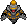

真氣拳Focus Punch
- 屬性
- 格鬥
- 分類
- 物理
- 威力
- 150
- 命中
- 100%
- SP
- 70
- 冷卻
- 2.6 秒（物理組）
- 範圍
- 近戰
- 距離
- 1 格
- 段數
- 1
- 前搖
- 1.5 秒
- 優先度
- -3
- 接觸
- 是
招式分類跟隨招式的 屬性 （第三世代規則，與火紅／葉綠相同）：火、水、草、電、超能力、冰、龍、惡屬性招式一律是特殊招式；其他屬性是物理招式（例外：分擔痛楚）。因此暗影球是物理招式，攀瀑是特殊招式。這是刻意設計，不是錯誤。
即時戰鬥效果
前搖 1.5 秒；若使用者受到傷害則失敗。
命中使用者正前方的一個目標。
升級時學會
 過動猿 Lv 43
過動猿 Lv 43招式光碟
 格鬥屬性招式光碟 ・超稀有（每打倒一隻該屬性寶可夢 0.012%，由 4 個招式分配）
格鬥屬性招式光碟 ・超稀有（每打倒一隻該屬性寶可夢 0.012%，由 4 個招式分配）
可以教會 138 隻寶可夢：
 小火龍
小火龍 火恐龍
火恐龍 噴火龍
噴火龍 傑尼龜
傑尼龜 卡咪龜
卡咪龜 水箭龜
水箭龜 皮卡丘
皮卡丘 雷丘
雷丘 穿山鼠
穿山鼠 穿山王
穿山王 尼多后
尼多后 尼多王
尼多王 皮皮皮可西
皮皮皮可西 胖丁
胖丁 胖可丁
胖可丁 可達鴨
可達鴨 哥達鴨
哥達鴨 猴怪
猴怪 火爆猴
火爆猴 蚊香君
蚊香君 蚊香泳士
蚊香泳士 凱西
凱西 勇基拉
勇基拉 胡地
胡地 腕力
腕力 豪力
豪力 怪力
怪力 小拳石
小拳石 隆隆石
隆隆石 隆隆岩
隆隆岩 呆殼獸
呆殼獸 臭臭泥
臭臭泥 耿鬼
耿鬼 催眠貘
催眠貘 引夢貘人
引夢貘人 卡拉卡拉
卡拉卡拉 嘎啦嘎啦
嘎啦嘎啦 飛腿郎
飛腿郎 快拳郎
快拳郎 大舌頭
大舌頭 鑽角犀獸
鑽角犀獸 吉利蛋
吉利蛋 袋獸
袋獸 魔牆人偶
魔牆人偶 迷唇姐
迷唇姐 電擊獸
電擊獸 鴨嘴火獸
鴨嘴火獸 凱羅斯
凱羅斯 卡比獸
卡比獸 快龍
快龍 超夢
超夢 夢幻
夢幻 火岩鼠
火岩鼠 火爆獸
火爆獸 小鋸鱷
小鋸鱷 藍鱷
藍鱷 大力鱷
大力鱷 尾立
尾立 大尾立
大尾立 芭瓢蟲
芭瓢蟲 安瓢蟲
安瓢蟲 波克基古
波克基古 茸茸羊
茸茸羊 電龍
電龍 瑪力露
瑪力露 瑪力露麗
瑪力露麗 樹才怪
樹才怪 蚊香蛙皇
蚊香蛙皇 長尾怪手
長尾怪手 沼王
沼王 呆呆王
呆呆王 布魯
布魯 布魯皇
布魯皇 赫拉克羅斯
赫拉克羅斯 狃拉
狃拉 熊寶寶
熊寶寶 圈圈熊
圈圈熊 信使鳥
信使鳥 無畏小子
無畏小子 戰舞郎
戰舞郎 電擊怪
電擊怪 鴨嘴寶寶
鴨嘴寶寶 大奶罐
大奶罐 幸福蛋
幸福蛋 班基拉斯
班基拉斯 木守宮
木守宮 森林蜥蜴
森林蜥蜴 蜥蜴王
蜥蜴王 力壯雞
力壯雞 火焰雞
火焰雞 巨沼怪
巨沼怪 樂天河童
樂天河童 斗笠菇
斗笠菇 懶人獺過動猿
懶人獺過動猿 請假王
請假王 幕下力士
幕下力士 鐵掌力士
鐵掌力士 勾魂眼
勾魂眼 大嘴娃
大嘴娃 波士可多拉
波士可多拉 瑪沙那恰雷姆
瑪沙那恰雷姆 電螢蟲甜甜螢
電螢蟲甜甜螢 噗噗豬
噗噗豬 晃晃斑
晃晃斑 刺球仙人掌
刺球仙人掌 夢歌仙人掌
夢歌仙人掌 貓鼬斬
貓鼬斬 變隱龍
變隱龍 彷徨夜靈
彷徨夜靈 小火焰猴
小火焰猴 猛火猴
猛火猴 烈焰猴
烈焰猴 大尾狸
大尾狸 戰槌龍
戰槌龍 泳圈鼬
泳圈鼬 浮潛鼬
浮潛鼬 雙尾怪手
雙尾怪手 捲捲耳
捲捲耳 長耳兔
長耳兔 魔尼尼
魔尼尼 小卡比獸
小卡比獸 利歐路
利歐路 路卡利歐
路卡利歐 不良蛙
不良蛙 毒骷蛙
毒骷蛙 暴雪王
暴雪王 瑪狃拉
瑪狃拉 大舌舔
大舌舔 超甲狂犀
超甲狂犀 電擊魔獸
電擊魔獸 鴨嘴炎獸
鴨嘴炎獸 波克基斯
波克基斯 艾路雷朵
艾路雷朵
黑夜魔靈